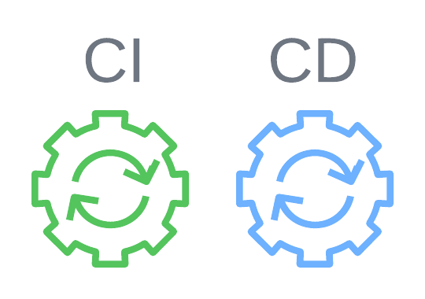

Evan Shiber
Cybersecurity student passionate about protecting systems from threats.
Cybersecurity student passionate about protecting systems from threats.

Students can see course descriptions, register for courses, and leave reviews/ratings for taken courses/professors.
Employed WebSocket for real-time chat between students and advisors, along with advisors and administrators.
Implemented user authentication for Privileged Access Management for Admin, Advisor, and Student user types.
If you'd like to learn more about this project, click here.
Created and employed a Finite State Machine (FSM), a 16-bit binary counter, a register file, a ripple-carry adder, multiple seven-segment displays, and user-controlled inputs on an Altera DE2-115 Cyclone IV FPGA.
If you'd like to learn more about this project, click here.
This is a placeholder for a future project.
Details about this project will be added soon.
If you'd like to learn more about this project, click here.
Engineered a real-time anomaly detection system for satellite networks using LLMs, mitigating threats like signal interference and data tampering for Argonne National Laboratory.
Configured network simulator ns-3 using UNSW-NB15 dataset to emulate satellite traffic.
Designed LangChain-based LLM pipeline for real-time anomaly detection.
View the project slideshow here or learn more at this link.
Developed AWS security framework with local AES-256 key management (PBKDF2-HMAC) for data privacy.
Built CLI for secure S3 file transfer, enforcing IAM policies and audit logging.
Analyzed AWS VPC Flow Logs with miniLLAMA for anomaly detection.
If you'd like to learn more about this project, click here.
Built multithreaded C bank server with pthreads for secure concurrent transactions and race condition prevention.
Designed thread-safe request queue with mutexes and condition variables to avoid deadlocks.
Optimized throughput by evaluating locking strategies to reduce transaction latency.
If you'd like to learn more about this project, click here.